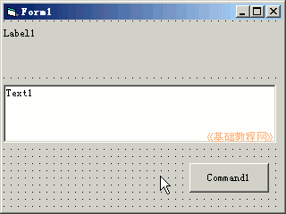
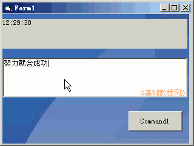

2011-2012 第一学期九年级 VB 教学课程设计
作者：TeliuTe 来源：基础教程网
十三、加载背景图 返回目录 下一课
学习目标：学会给窗体添加背景图片；
注意事项：提前把图片准备好；
1、绘制控件
1）打开一个标准EXE，绘制一个标签，一个文本框，一个按钮，
2）设置好控件的字体和颜色；

3）进入代码窗口，点击对象下拉列表，依次选择“Form1、Command1”，在出来的代码段中分别输入；
'Form：
form1.picture=loadpicture("e:\4.jpg")
label1.caption=time
'Command1:
end
4）保存为“第十三课”，点菜单“运行－启动”，在文本框中输入内容；

板书设计：第13课 学会加载背景图
1.界面：1个窗体、标签、文本框、按钮
2.设置 caption、Font color 属性
3.进入代码窗口，输入代码
4.保存－运行
课后记 2011-12-2 16:23：
上午调过一节课来，还在构思内容
结果也没让带笔记本来，出现很多错误
--
后面的班提前就要求好，一定要细心
不抄笔记的，问老师就准备好挨骂
--
学习上不要偷懒，抄一遍就知道哪儿容易错了
效果一般抄的还是不多，不过输的时候仔细些了
--
整个做不出来，至少得做一半，
难的代码你输不了，把按钮简单的要输进去
--
单词容易拼写错，输代码的时候换到完全英文别偷懒
冒号和斜杠容易错，图片也有可能没接收到，自己再复制一个
--
忽然想到心理有些幼稚？说话语气语调太着急
发现了就慢慢改，不用受学生的影响
--
讲的时候就把斜杠和冒号说一下，在哪个位置怎么输入
想到别的事情了，注意力不够集中
--
不讲黑板上的了，直接讲代码和演示
把图片文件下发到学生机的E:盘里
本节学习了加载背景图的基础知识，如果你成功地完成了练习，请继续学习下一课内容；
返回目录 下一课
本教程由86团学校TeliuTe制作|著作权所有
基础教程网：http://teliute.org/
美丽的校园……
转载和引用本站内容，请保留版权信息和本站链接。